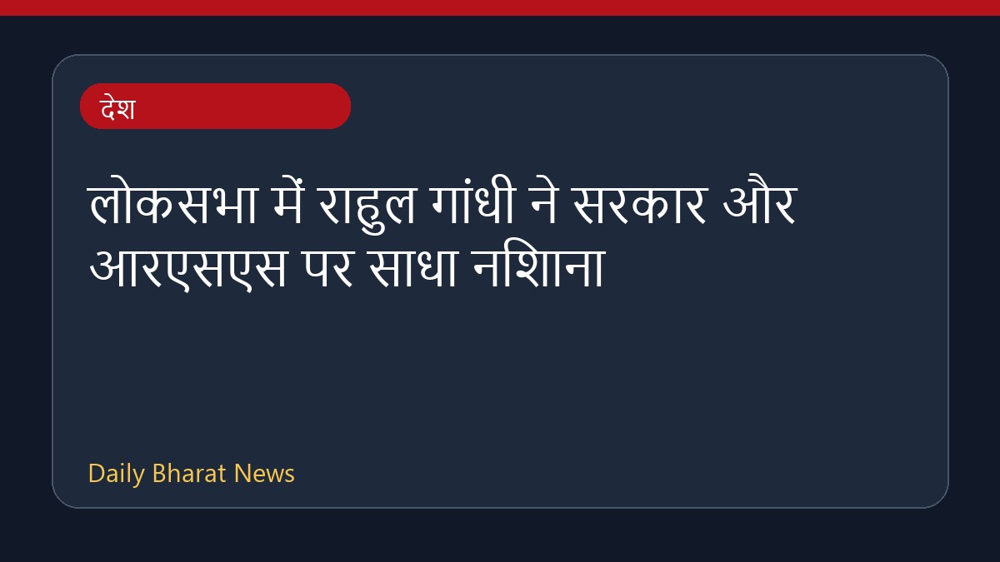

लोकसभा में राहुल गांधी ने सरकार और आरएसएस पर साधा निशाना

लोकसभा में राहुल गांधी ने छात्र प्रदर्शनों के मुद्दे पर सरकार और राष्ट्रीय स्वयंसेवक संघ की आलोचना की। उन्होंने युवा प्रदर्शनकारियों पर कथित पुलिस कार्रवाई को लेकर केंद्रीय गृह मंत्री अमित शाह को हटाने की मांग की। दूसरी ओर, भारतीय जनता पार्टी ने राहुल गांधी पर पुलिस कार्रवाई के बारे में गलत जानकारी फैलाने का आरोप लगाते हुए उनसे माफी की मांग की है। संसद के मानसून सत्र के दौरान लोकसभा में वंदे मातरम विधेयक पारित होने के बाद सदन की कार्यवाही स्थगित कर दी गई, जबकि राज्यसभा में पेपर लीक विधेयक पर चर्चा हुई।
मूल स्रोत: India News Sources
Rahul Gandhi attacks government, RSS over students’ protest in Lok Sabha - The Hindu ↗
Rahul Gandhi attacks government, RSS over students’ protest in Lok Sabha - The Hindu ↗